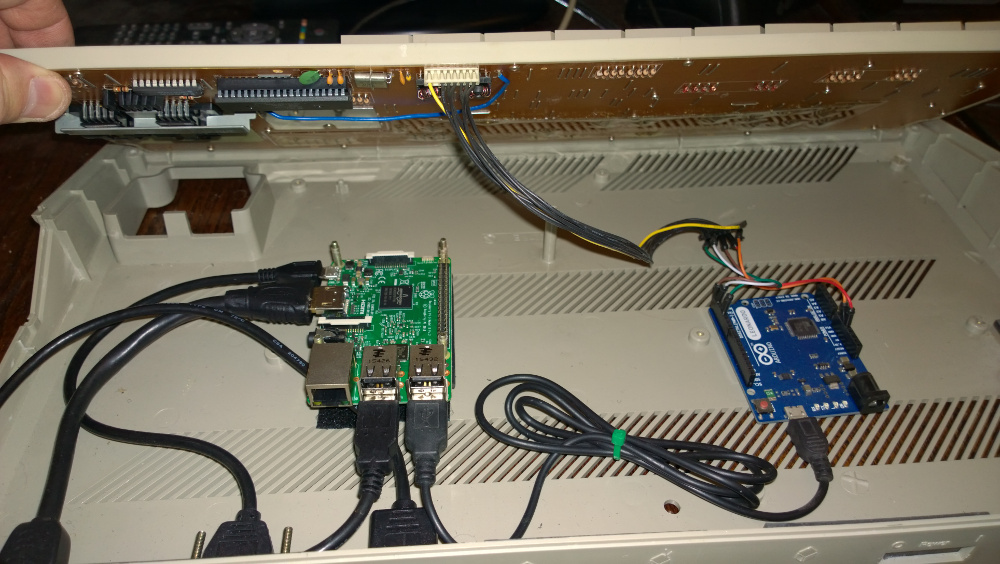

Atari PI Project (reworked)
I thought it would be nice to update my previous Atari ST / Raspberry Pi hybrid project to use a V3 Pi and and at the same time tidy up the case, sort out the cabling and simplify a few things.



I removed the internal speaker from the Atari as I thought it would be easier just to use the TV speaker and also removed the USB hub as it was no longer needed.
Everything else is exactly the same as the original project.
Return to home page.